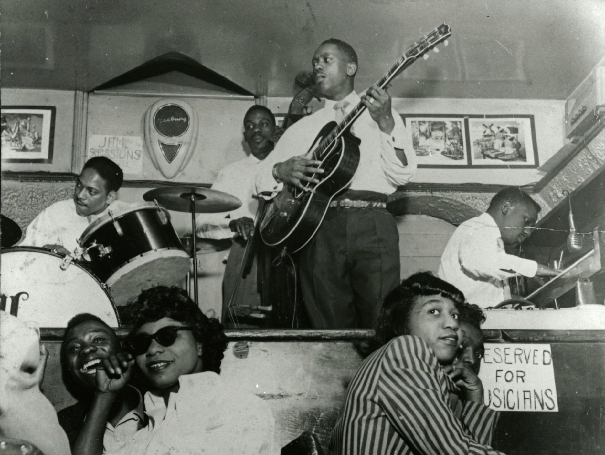

The Electric Guitar Timeline
Origins: The Need for Volume (1920s–1930s)

Acoustic guitars struggled to be heard in jazz and big‑band settings. Early inventors experimented with pickups and amplification, setting the stage for engineering innovation driven by musical necessity.
First Breakthrough: The Rickenbacker “Frying Pan” (1931–1932)

The first commercially successful electric guitar, featuring a horseshoe‑style pickup. Marks the beginning of the electric guitar as a real instrument.
Les Paul’s “Log” Prototype

Les Paul’s “Log” (early 1940s): a 4x4 piece of wood with pickups attached, proved that a solid body reduced feedback and increased sustain. This innovation paved the way for the modern electric guitar.
Fender Broadcaster/Telecaster & Early Fender Ads

Fender Broadcaster/Telecaster (1950): first mass‑produced solid‑body electric guitar, simple and durable.
Gibson Les Paul (1952): combined craftsmanship with powerful tone, became one of the most iconic guitars in history.
Early Fender advertisements and catalogs show the shift toward mass production and how the electric guitar was marketed to working musicians. This era establishes the core designs still used today.
Cultural Explosion and Iconic Players (1960s–1980s)

The electric guitar becomes a symbol of identity, rebellion, and creativity. Influential figures: Jimi Hendrix, Eric Clapton, Jimmy Page, Jeff Beck, Eddie Van Halen. The guitar becomes central to rock, metal, punk, and pop. Instruments like the Stratocaster, SG, and Les Paul become cultural icons.
Technology Expands the Sound (1960s–present)

Key innovations: single‑coil vs humbucker pickups, distortion, fuzz, overdrive, effects pedals (wah, delay, chorus, flanger), amplifier evolution (tubes → solid‑state → modeling), recording and live sound improvements. Each innovation opened new creative possibilities for players.


Modern Era: Customization, Digital Tech, and Cultural Legacy (1990s–present)

Rise of boutique builders and DIY modding. Digital modeling (Line 6, Kemper, Helix, Neural DSP) reshapes tone creation. The electric guitar remains a symbol of creativity and personal expression. Despite digital music trends, the guitar maintains cultural relevance in rock, pop, indie, and beyond.